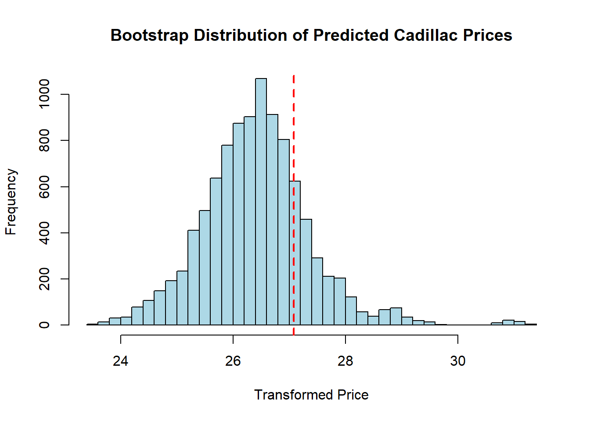

Show code
library(readr)library(readr)#read in data
Cars <- read_csv("Cars.csv")Rows: 234 Columns: 9
── Column specification ────────────────────────────────────────────────────────
Delimiter: ","
chr (1): Vehicle Name
dbl (8): Hybrid, SuggestedRetailPrice, EngineSize, Cylinders, Horsepower, Hi...
ℹ Use `spec()` to retrieve the full column specification for this data.
ℹ Specify the column types or set `show_col_types = FALSE` to quiet this message.#making linear model based on ALL the variables
model <- lm(SuggestedRetailPrice ~
Hybrid + EngineSize + Cylinders + Horsepower + HighwayMPG + Weight + WheelBase,
data = Cars)
#remvoing outlier
#removed because it was only electric so it was expensive
#only engine with 3 cylinders
Cars = Cars[-67,]
#renaming got it from Ashley
x1 = Cars$Hybrid
x2 = Cars$EngineSize
x3 = Cars$Cylinders
x4 = Cars$Horsepower
x5 = Cars$HighwayMPG
x6 = Cars$Weight
x7 = Cars$WheelBase
y = Cars$SuggestedRetailPrice
X = data.frame(x1,x2,x3,x4,x5,x6,x7)
Y = y
YX = data.frame(y,x1,x2,x3,x4,x5,x6,x7)
power.trans = function(lambda){
Y.trans = (Y^lambda - 1)/(lambda)
Y.hat = lm(YX)$fit
RSS.lambda = sum(lm(Y.hat~Y.trans)$residuals^2)
RSS.lambda
}
optim(1,power.trans)Warning in optim(1, power.trans): one-dimensional optimization by Nelder-Mead is unreliable:
use "Brent" or optimize() directly$par
[1] 0.1673828
$value
[1] 6882400177
$counts
function gradient
28 NA
$convergence
[1] 0
$message
NULLlambda = optim(1,power.trans)$parWarning in optim(1, power.trans): one-dimensional optimization by Nelder-Mead is unreliable:
use "Brent" or optimize() directlylambda[1] 0.1673828# checking transformation
Y.trans = (Y^lambda - 1)/(lambda)
Y.hat = lm(YX)$fit
model3 = lm(Y.trans~x1+x2+x3+x4+x5+x6+x7)
#put transformed model into step function
#to remove any variables that arent significant
model_new = step(model3, direction = "backward")Start: AIC=-13.52
Y.trans ~ x1 + x2 + x3 + x4 + x5 + x6 + x7
Df Sum of Sq RSS AIC
- x7 1 0.157 205.43 -15.339
- x1 1 0.426 205.70 -15.034
- x5 1 1.683 206.96 -13.615
<none> 205.28 -13.518
- x3 1 5.401 210.68 -9.467
- x2 1 28.886 234.16 15.159
- x6 1 81.071 286.35 62.037
- x4 1 132.034 337.31 100.201
Step: AIC=-15.34
Y.trans ~ x1 + x2 + x3 + x4 + x5 + x6
Df Sum of Sq RSS AIC
- x1 1 0.415 205.85 -16.870
<none> 205.43 -15.339
- x5 1 2.033 207.47 -15.045
- x3 1 5.307 210.74 -11.396
- x2 1 30.423 235.86 14.838
- x6 1 118.758 324.19 88.958
- x4 1 132.043 337.48 98.316
Step: AIC=-16.87
Y.trans ~ x2 + x3 + x4 + x5 + x6
Df Sum of Sq RSS AIC
<none> 205.85 -16.870
- x5 1 4.496 210.34 -13.835
- x3 1 5.729 211.58 -12.474
- x2 1 32.126 237.97 14.921
- x4 1 133.007 338.85 97.266
- x6 1 135.794 341.64 99.174#part b stuff
new_car <- data.frame(
x2 = 3.6,
x3 = 6,
x4 = 225,
x5 = 24,
x6 = 3237
)
#bootstrap for normality
car.m3 <- data.frame(
x1 = x1,
x2 = x2,
x3 = x3,
x4 = x4,
x5 = x5,
x6 = x6,
x7 = x7
)
#Step 2, BS sample x and residuals (BSx, BSres)
set.seed(123) # for reproducibility
n <- nrow(car.m3)
B <- 10000 # number of bootstrap iterations
# Store bootstrap predictions
BS.ystar <- numeric(B)
orig.res <- residuals(model_new)
for(i in 1:B){
# Step 1: Resample x and residuals
BS.index=sample(1:n,n,replace =TRUE)
BS.x=car.m3[BS.index,]
BS.res <- sample(orig.res, n, replace = TRUE)
# Step 2: Predicted gy for bootstrap x
BS.yhat <- predict(model_new, newdata = data.frame(x = BS.x))
# Step 3: Generate BS transformed y
BS.y <- BS.yhat + BS.res
BS.data = Cars
BS.data[,3] = BS.y
BS.data[,c(2,4,5,6,7,8,9)] = BS.x
Y.trans = BS.y
BS_new_car <- data.frame(
x2 = x2,
x3 = x3,
x4 = x4,
x5 = x5,
x6 = x6,
Y.trans = Y.trans)
# Step 4: Fit bootstrap model
BS.model3 = lm(Y.trans~x2+x3+x4+x5+x6,data=BS_new_car)
# Step 5: Predict transformed y for 80th percentile
BS.ystar[i] <- predict(BS.model3, newdata = new_car) + sample(orig.res, 1)
}
pred_trans <- quantile(BS.ystar, 0.80)
pred_price <- ((pred_trans * lambda) + 1)^(1 / lambda)Hey Frank and Tron,
So, full disclosure…I don’t know much about cars. But since I’ve got numbers on the brain and you’ve got customers, I thought I’d help out with pricing your cars without making you guess.
Your family member (my professor), gave me a dataset and here’s what I did (bit of nerdy stuff):

predict_price(). You just feed it a car’s specs, and it spits out the average suggested retail price.#PART A PREDICTION
predict_price <- function(hybrid = 0,
engineSize = 2.9,
cylinders = 6,
horsepower = 200,
highwayMPG = 29,
weight = 3300,
wheelBase = 107) {
# Create a new data frame for prediction
new_car <- data.frame(
x1 = hybrid,
x2 = engineSize,
x3 = cylinders,
x4 = horsepower,
x5 = highwayMPG,
x6 = weight,
x7 = wheelBase
)
# Predict on the transformed scale (same as model3’s Y)
predicted_trans <- predict(model_new, newdata = new_car)
# Back-transform using your power transformation lambda
if (lambda != 0) {
predicted_price <- ((predicted_trans * lambda) + 1)^(1 / lambda)
} else {
predicted_price <- exp(predicted_trans) # special case if λ ≈ 0
}
# Print a clean output
cat("Estimated Suggested Retail Price: $", round(predicted_price, 2), "\n")
}
predict_price(0, 3.0, 6, 382, 29, 3400, 97.2)Estimated Suggested Retail Price: $ 61548.13 Boom! A 2026 Toyota GR Supra 3.0 (base) priced without even leaving your chair.

Okay… so the model’s off by a couple grand, but hey, for just looking at engine size, horsepower, weight, and MPG, it’s not too bad!
Now, since our Newport, Anaheim Hills, and Tustin customers are fancy, we don’t want to sell at the average prices. We want top of the line, but not insane. That’s where bootstrapping comes in:
Take a Cadillac we might show: 3.6L engine, 6 cylinders, 225 horsepower, 24 highway MPG, weighing 3,237 lbs, a 107-inch wheelbase, and not a hybrid. Bootstrapping it, our model suggests pricing it at about $27,490.
# Histogram of bootstrap predictions
hist(BS.ystar,
breaks = 50,
main = "Bootstrap Distribution of Predicted Cadillac Prices",
xlab = "Transformed Price",
col = "lightblue")
# Add a vertical line for the 80th percentile
abline(v = pred_trans, col = "red", lwd = 2, lty = 2)
This histogram shows all the different prices our bootstrap model imagined for the Cadillac. The red line is the 80th percentile. Basically the price we’d want to aim for if we want to look fancy.
Fingers crossed this helps, Tron and Frank! Maybe after Thanksgiving break I’ll whip up a sick little calculator website for you guys but for now, midterms are taking over my life. :)